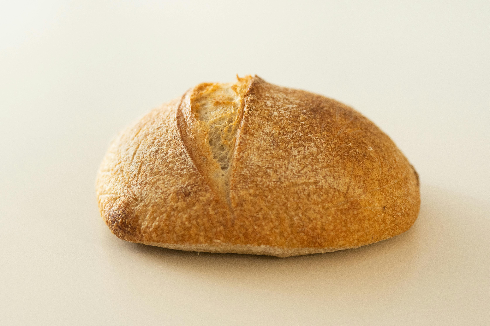
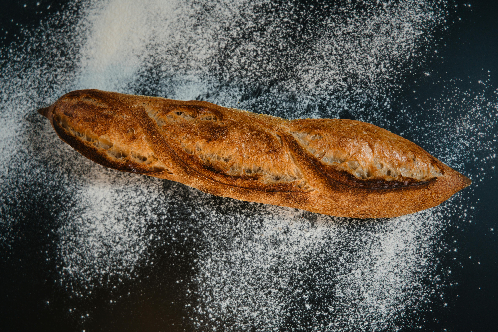
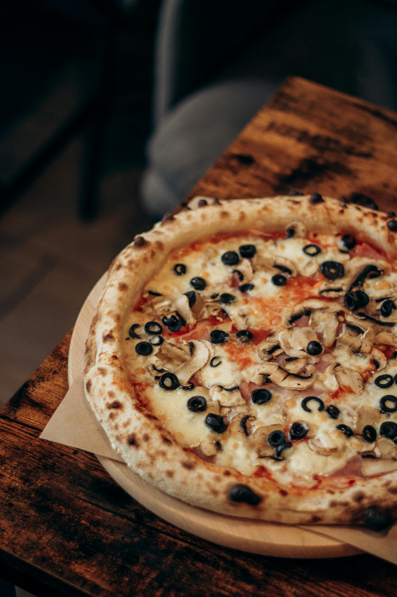
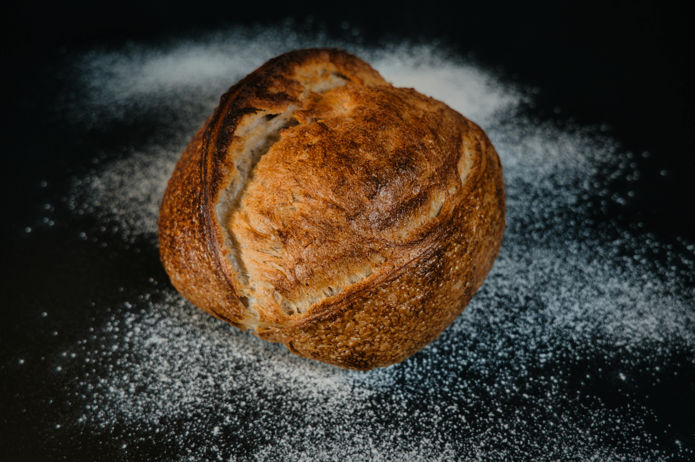
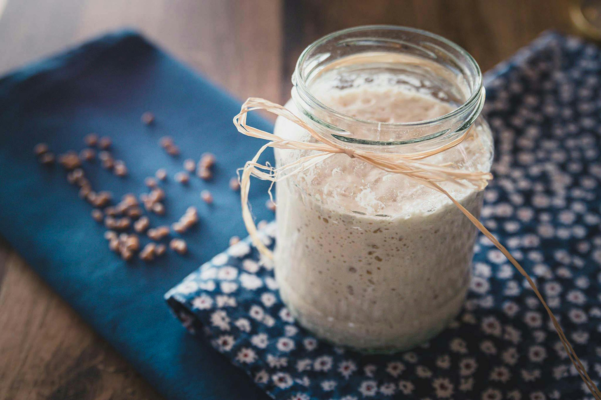

- Beginner's Guide
- Intermediate Guide
- Recipes
Sourdough Bread
Starting to make your first loaf of sourdough bread can be daunting. "That’s why I’ve" put together this beginner’s sourdough bread tutorial and recipe—it will give you confidence as you take your first steps in baking sourdough bread from your home kitchen. This how-to guide starts with explaining baking terms and definitions so that we will have a common vocabulary once we get to the recipe. And then, each step of the process has lots of information to ensure you understand what is happening and what to do. But, before we go on this beginner’s sourdough bread recipe, let’s first take a look at what sourdough bread is.

Recipes

A baguette is a long, thin, iconic French bread loaf known for its crisp, golden crust and light, airy interior.

Pizza is a savory Italian dish consisting of a flattened bread dough base, topped with tomato sauce and mozzarella cheese, then baked—traditionally in a high-temperature wood-fired oven. It is frequently customized with toppings like meats, vegetables, and herbs, creating a versatile, popular, and comforting hot meal.

Sourdough is a fermented bread made without commercial yeast, relying on a natural culture of wild yeast and lactic acid bacteria. Known for its tanginess, chewy texture, and thick, crispy crust, it features a long fermentation process (18–36 hours) that enhances digestibility and produces complex flavors.

A sourdough starter is a live, fermented culture of flour and water that acts as a natural leavening agent for bread, replacing commercial yeast. It cultivates wild yeast and lactic acid bacteria, which create bubbles for rising and produce a tangy, sour flavor. It requires regular "feedings" of flour and water to remain active.
A hungry heart will feed on any crumb.